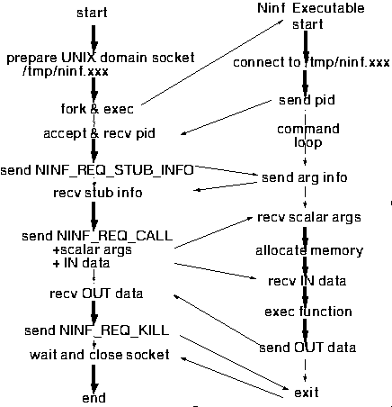

<!DOCTYPE HTML PUBLIC "-//W3O//DTD W3 HTML 2.0//EN">
<!Converted with LaTeX2HTML 95.1 (Fri Jan 20 1995) by Nikos Drakos (nikos@cbl.leeds.ac.uk), CBLU, University of Leeds >
<!Actually with its Japanized version JLaTeX2HTML 95 (Wed Mar 1 1995) by Masahiro Kitagawa (kitagawa@ee.es.osaka-u.ac.jp), Osaka University >
<HEAD>
<TITLE> Ninf Executable  $B$H$N8r?.$N$?$a$N%W%m%H%3%k(B</TITLE>
</HEAD>
<BODY>
<meta name="description" value=" Ninf Executable  $B$H$N8r?.$N$?$a$N%W%m%H%3%k(B">
<meta name="keywords" value="main">
<meta name="resource-type" value="document">
<meta name="distribution" value="global">
<P>
 <BR> <HR><A NAME=tex2html123 HREF="node10.html"></A>   <A NAME=tex2html121 HREF="node8.html"></A>   <A NAME=tex2html115 HREF="node8.html"></A>         <BR>
<B> Next:</B> <A NAME=tex2html124 HREF="node10.html"> Ninf Server$B$H$NDL?.(B</A>
<B>Up:</B> <A NAME=tex2html122 HREF="node8.html"> Ninf RPC   $B$N%W%m%H%3%k(B</A>
<B> Previous:</B> <A NAME=tex2html116 HREF="node8.html"> Ninf RPC   $B$N%W%m%H%3%k(B</A>
<BR> <HR> <P>
<H2><A NAME=SECTION00051000000000000000> Ninf Executable  $B$H$N8r?.$N$?$a$N%W%m%H%3%k(B</A></H2>
<P>
<P>
Ninf Executable  $B$H$NDL?.$O!"(Bxdr$B$rMQ$$$?(Bstream$BDL?.$G9T$J$&!#(B
<P>
Ninf Executable  $B$O!"(Bfork $B$5$l$?8e(B execute $B$5$l$F<B9T$5$l$k$3$H$r2>Dj$7$F(B
$B@_7W$5$l$F$$$k!#(B
Ninf Executable  $B$N5/F0$^$G$N<j=g$O0J2<$NDL$j$G$"$k!#(B
<UL><LI> Ninf Executable  $B$O!"5/F0$5$l$k$H!"(B
$B<+J,$N(B parent process$B$N%W%m%;%9(Bid <code>&lt;ppid&gt;</code> $B$rMQ$$$F(B
<code>/tmp/ninf.&lt;ppid&gt;</code>$B$H$$$&L>A0$N(Bunix domain$B$N%=%1%C%H$KBP$7$F(Bconnect$B$9$k!#(B
<A NAME=tex2html5 HREF="footnode.html#82"></A>
<P>
<LI> connect$B$,40N;$7$?$i!"<+J,$N%W%m%;%9(Bid$B$r(Bxdr$B$G(Bconnect$B$7$?(Bsocket$B$K(B
$B=q$-9~$_!"5/F0$7$?$3$H$rDLCN$9$k!#$3$l$O!"?F%W%m%;%9$NB&$G(Bconnect $B$7$F$-$?(B
$B%W%m%0%i%`$,K\Ev$K<+J,$,5/F0$7$?$b$N$G$"$k$+$H$$$&!"4JC1$JG'>Z$r$*$3$J$&(B
$B$?$a$G$"$k!#(B
<P>
<LI> $B$=$N8e!"%3%^%s%I<B9T%k!<%W$r<B9T$9$k!#(B
</UL>
<P>
$B%3%^%s%I<B9T%k!<%W$O!"%3%^%s%I$r@hF,$H$9$kF~NO$r<u$1<h$j!"$=$l$KBP1~$9(B
$B$k=PNO$9$k%k!<%W$G$"$k!#=PNO$O!"(BNinf Executable  $B$r=*N;$5$;$k%3%^%s%I(B
(<code>NINF_REQ_KILL</code>)$B0J30$O!"(Back$B%3!<%I(B(<code>NINF_ACK_ERROR</code>$B$^$?$O!"(B
<code>NINF_ACK_OK</code>)$B$rJV$7!"(B<code>NINF_ACK_OK</code>$B$N>l9g$K$O!"E,Ev$J=PNO$r(B
$B9T$&!#%3%^%s%I$O0J2<$N$b$N$,$"$k!'(B
<P>
<UL><LI> <code>NINF_REQ_STUB_INFO</code><BR> 
$BB3$/F~NO$O$J$7!#(BNinf Procedure  $B$N%$%s%?!<%U%'%$%9(B  $B$rJV$9!#(B
<LI> <code>NINF_REQ_CALL</code><BR> 
$BF~NO$H$7$F!"%9%+%i0z?t$NCM$r<u$1<h$j!"(BIN$B$G;XDj$5$l$F$$$kG[Ns%G!<%?$r<u(B
$B$1<h$k!#$3$l$i$N%G!<%?$O(B <code>NINF_REQ_STUB_INFO</code>$B$G<hF@$7$?%$%s%?!<%U%'%$%9(B   $B$K(B
$B$7$?$,$C$F9T$o$l$J$/$F$O$J$i$J$$!#(B
<P>
$B7W;;$,40N;$9$k$H(BOUT$B$G;XDj$5$l$F$$$kG[Ns%G!<%?$rJV$9!#(Bclient$BB&$G$O!"$3$N%G!<(B
$B%?$rMQ$$$F!"(BOUT$B$G;XDj$7$?G[Ns$r(Bupdate$B$9$k!#(B
<P>
<LI> <code>NINF_REQ_DESCRIPTION</code><BR> 
NINF IDL$B$K5-=R$5$l$F$$$k(Bdescription$B>pJs$rJV$9!#(B
<P>
<LI> <code>NINF_REQ_KILL</code><BR> 
$BB3$/F~NO$O$J$7!#(BNinf Executable  $B$r=*N;$5$;$k!#=PNO$O9T$o$J$$!#(B
</UL>
<P>
$B?^(B<A HREF="node9.html#ninf_local_exec">3</A>$B$K(B Ninf Executable  $B$H$N8r?.$NMM;R$r<($9!#(B
<P>
<P><A NAME=181>&#160;</A><A NAME=ninf_local_exec>&#160;</A>
<BR><STRONG>$B?^(B 3:</STRONG>  Ninf RPC   $B$NMQ$$$k%W%m%H%3%k(B<BR>
<P>


<BR> <HR>
<P><ADDRESS>
<I>Hidemoto Nakada <BR>
Wed Dec 20 05:42:46 JST 1995</I>
</ADDRESS>
</BODY>
